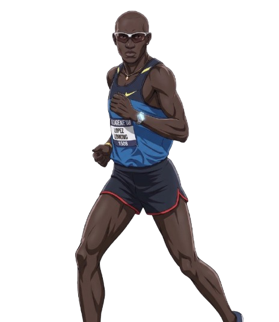

Hola amigo, bienvenido a mi país natal Sudán del Sur, te contaré un poco sobre mi historia
En esta entrevista, Howard Gardner sostiene categóricamente que «una mala persona no llega nunca a ser un buen profesional». Tras sus investigaciones en el Goodwork Project de la Universidad de Harvard, concluye que los mejores profesionales son siempre aquellos que combinan tres factores (ECE): son Excelentes en su desempeño, están Comprometidos con su trabajo y actúan de forma Ética.
Para Gardner, una persona sin principios éticos o guiada únicamente por el ego, la avaricia o el beneficio personal puede llegar a tener pericia técnica o acumular riqueza, pero nunca alcanzará la excelencia verdadera. Esto se debe a que la excelencia exige trascender las necesidades propias para servir a un propósito más amplio que beneficie a la comunidad. Sin embargo, el propio autor advierte con preocupación que muchos estudiantes ven la ética como algo secundario al inicio de sus carreras, creyendo que para triunfar primero necesitan dar "codazos".
¿Hasta qué punto consideras que la ética y el compromiso con los demás son indispensables para alcanzar la verdadera excelencia en tu vida laboral, o crees —como piensan muchos jóvenes según Gardner— que la ética es un "lujo" que solo se puede uno permitir tras haber alcanzado el éxito?
¿Te acuerdas de esta película en tu clase de Core 1? ¿Qué puedes rescatar de esta película que te haya servido a lo largo de todos estos años, ahora que te encuentras en Core 5?
La noción de persona humana constituye el núcleo de la antropología y el fundamento de la dignidad e inviolabilidad de cada individuo. Su característica definatoria es la intimidad, un mundo interior inmaterial y creador que contiene pensamientos e ideas inéditas. Esta dimensión íntima le otorga a la persona una identidad única, irremplazable e irrepetible, reconocida a través de un nombre propio.
Esa interioridad no permanece estática, sino que se exterioriza necesariamente mediante el cuerpo y el lenguaje. El cuerpo —manifestado especialmente en el rostro, los gestos y la vestimenta protegida por el pudor— es la condición de posibilidad para mostrar la intimidad al mundo. Por su parte, la palabra permite comunicar los pensamientos y hacerlos públicos para entrar en relación con otros.
Por último, la persona alcanza su plenitud en la intersubjetividad y el diálogo, ya que posee una naturaleza comunitaria y no puede existir en el aislamiento («no hay un yo si no hay un tú»). Esta apertura a los demás se despliega a través de la libertad —como dominio sobre los propios actos— y la capacidad de donación o amor, mediante la cual la persona entrega voluntariamente algo de su propia intimidad a sus semejantes.
La identidad personal y la autenticidad no son propiedades estáticas otorgadas a priori, sino el resultado dinámico del despliegue de la libertad a lo largo de la biografía de cada individuo. En su sentido genuino, lo auténtico representa la correspondencia verdadera entre la conducta exterior y el fondo inalienable de la intimidad personal. Asimismo, esta identidad posee una dimensión dialógica, puesto que requiere del reconocimiento de los demás para constituirse plenamente y evitar distorsiones como el autoengaño, la alienación o la inautenticidad.
Como desarrollo de esta tesis, la autenticidad exige un refrendo personal de la acción, lo que implica que las decisiones no broten de condicionamientos externos o modas miméticas, sino que sean asumidas voluntariamente desde el núcleo de valores de la persona. Frente al individualismo moderno que reduce la libertad a la simple elección espontánea o al consumo, la existencia auténtica se configura como una virtud e ideal moral (kalokagathía), caracterizada por la coherencia interior, la madurez y la intensidad vital.
Finalmente, el texto plantea que el factor máximamente personalizador de la vida es la vocación, entendida como el descubrimiento de un proyecto biográfico global e irremplazable. Lejos de ser una invención puramente egoísta, la vocación se experimenta como una llamada o don recibido que responde a la pregunta de quién se es, otorgando un «para qué» fundamental y logrando la unidad de vida a través de la fidelidad entre el origen, el presente y el destino.
Libertad constitutiva o interior: Es el nivel más profundo de la persona; un centro de intimidad y dignidad inviolable que nadie puede arrebatar, ni siquiera en situaciones de cautiverio o coerción externa. Esta dimensión parte de la «síntesis pasiva» —es decir, las circunstancias que no elegimos, como nuestro cuerpo, familia o momento histórico—, las cuales no son un límite que nos anula, sino el punto de partida real desde el cual actuamos.
Pensando en tu propia vida, ¿en qué medida tus decisiones cotidianas responden a un proyecto vital que fortalece tu carácter y amplía tu libertad, o sientes que con frecuencia tu libertad se diluye en la simple reacción a impulsos del momento o a elecciones triviales que te impone el entorno?